건설안전산업기사 (2020-08-22 기출문제)
1과목: 산업안전관리론
1. 리더십(leadership)의 특성에 대한 설명으로 옳은 것은?
- 지휘형태는 민주적이다.
- 권한여부는 위에서 위임된다.
- 구성원과의 관계는 지배적 구조이다.
- 권한근거는 법적 또는 공식적으로 부여된다.
(정답률: 76%)

2. 재해 원인을 통상적으로 직접원인과 간접원인으로 나눌 때 직접원인에 해당되는 것은?
- 기술적원인
- 물적원인
- 교육적원인
- 관리적원인
(정답률: 78%)
3. 인간관계인 메커니즘 중 다른 사람의 행동 양식이나 태도를 투입시키거나, 다른 사람 가운데서 자기와 비슷한 것을 발견한 것을 무엇이라고 하는가?
- 투사(Projection)
- 모방(Imitation)
- 암시(Suggestion)
- 동일화(Identification)
(정답률: 62%)
4. 알더퍼의 ERG(Existence Relation Growth)이론에서 생리적 욕구, 물리적 측면의 안전욕구 등 저차원적 욕구에 해당하는 것은?
- 관계욕구
- 성장욕구
- 존재욕구
- 사회적욕구
(정답률: 63%)
5. 안전교육 계획 수립 시 고려하여야 할 사항과 관계가 가장 먼 것은?
- 필요한 정보를 수집한다.
- 현장의 의견을 충분히 반영한다.
- 법 규정에 의한 교육에 한정한다.
- 안전교육 시행 체계와의 관련을 고려한다.
(정답률: 76%)
6. 기능(기술)교육의 진행방법 중 하버드 학파의 5단계 교수법의 순서로 옳은 것은?
- 준비 → 연합 → 교시 → 응용 → 총괄
- 준비 → 교시 → 연합 → 총괄 → 응용
- 준비 → 총괄 → 연합 → 응용 → 교시
- 준비 → 응용 → 총괄 → 교시 → 연합
(정답률: 71%)
7. 산업안전보건법령상 안전모의 시험성능기준 항목이 아닌 것은?
- 난연성
- 인장성
- 내관통성
- 충격흡수성
(정답률: 71%)
8. 위험예지훈련 4라운드 기법의 진행방법에 있어 문제점 발견 및 중요 문제를 결정하는 단계는?
- 대책수립 단계
- 현상파악 단계
- 본질추구 단계
- 행동목표설정 단계
(정답률: 51%)
9. 태풍, 지진 등의 천재지변이 발생한 경우나 이상상태 발생 시 기능상 이상 유·무에 대한 안전점검의 종류는?
- 일상점검
- 정기점검
- 수시점검
- 특별점검
(정답률: 78%)
10. 산업안전보건법령상 근로자 안전보건교육 대상과 교육기간으로 옳은 것은?
- 정기교육인 경우 : 사무직 종사근로자 – 매분기 3시간 이상
- 정기교육인 경우 : 관리감독자 지위에 있는 사람 – 연간 10시간 이상
- 채용 시 교육인 경우 : 일용근로자 – 4시간 이상
- 작업내용 변경 시 교육인 경우 : 일용근로자를 제외한 근로자 – 1시간 이상
(정답률: 54%)
11. 재해예방의 4원칙에 해당하는 내용이 아닌 것은?
- 예방가능의 원칙
- 원인계기의 원칙
- 손실우연의 원칙
- 사고조사의 원칙
(정답률: 67%)
12. 학습 성취에 직접적인 영향을 미치는 요인과 가장 거리가 먼 것은?
- 적성
- 준비도
- 개인차
- 동기유발
(정답률: 52%)
13. 산업안전보건법령상 안전보건표지의 종류 중 인화성물질에 관한 표지에 해당하는 것은?
- 금지표시
- 경고표시
- 지시표시
- 안내표시
(정답률: 73%)
14. 인지과정 착오의 요인이 아닌 것은?
- 정서 불안정
- 감각차단 현상
- 작업자의 기능미숙
- 생리·심리적 능력의 한계
(정답률: 62%)
15. 안전관리조직의 형태 중 라인스탭형에 대한 설명으로 틀린 것은?
- 대규모 사업장(1000명 이상)에 효율적이다.
- 안전과 생산업무가 분리될 우려가 없기 때문에 균형을 유지할 수 있다.
- 모든 안전관리 업무를 생산라인을 통하여 직선적으로 이루어지도록 편성된 조직이다.
- 안전업무를 전문적으로 담당하는 스탭 및 생산라인의 각 계층에도 겸임 또는 전임의 안전담당당자를 둔다.
(정답률: 63%)
16. O.J.T(On the Job Traning)의 특징 중 틀린 것은?
- 훈련과 업무의 계속성이 끊어지지 않는다.
- 직장과 실정에 맞게 실제적 훈련이 가능하다.
- 훈련의 효과가 곧 업무에 나타나며, 훈련의 개선이 용이하다.
- 다수의 근로자들에게 조직적 훈련이 가능하다.
(정답률: 71%)
17. 재해의 원인과 결과를 연계하여 상호 관계를 파악하기 위해 도표화하는 분석방법은?
- 관리도
- 파레토도
- 특성요인도
- 크로스분류도
(정답률: 55%)
18. 연간 근로자수가 300명인 A공장에서 지난 1년간 1명의 재해자(신체장해등급:1급)가 발생하였다면 이 공장의 강도율은? (단, 근로자 1인당 1일 8시간씩 연간 300일을 근무하였다.)
- 4.27
- 6.42
- 10.⑤
- 10.42
(정답률: 45%)
19. 무재해 운동의 이념 가운데 직장의 위험 요인을 행동하기 전에 예지하여 발견, 파악, 해결하는 것을 의미하는 것은?
- 무의 원칙
- 선취의 원칙
- 참가의 원칙
- 인간 존중의 원칙
(정답률: 65%)
20. 상황성 누발자의 재해유발원인과 거리가 먼 것은?
- 작업의 어려움
- 기계설비의 결함
- 심신의 근심
- 주의력의 산만
(정답률: 34%)
2과목: 인간공학 및 시스템안전공학
21. 다음 형상 암호화 조종장치 중 이산 멈춤 위치용 조종장치는?
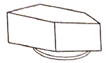
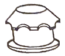
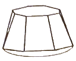
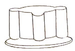
(정답률: 56%)
22. 작업기억(working memory)과 관련된 설명으로 옳지 않은 것은?
- 오랜 기간 정보를 기억하는 것이다.
- 작업기억 내의 정보는 시간이 흐름에 따라 쇠퇴할 수 있다.
- 작업기억의 정보는 일반적으로 시각, 음성, 의미 코드의 3가지로 코드화된다.
- 리허설(rechearsal)은 정보를 작업기억 내에 유지하는 유일한 방법이다.
(정답률: 56%)
23. 다음 중 육체적 활동에 대한 생리학적 측정방법과 가장 거리가 먼 것은?
- EMG
- EEG
- 심박수
- 에너지소비량
(정답률: 55%)
24. 주물공장 A작업자의 작업지속시간과 휴식시간을 열압박지수(HSI)를 활용하여 계산하니 각각 45분, 15분이었다. A작업자의 1일 작업량(TW)은 얼마인가? (단, 휴식시간은 포함하지 않으며, 1일 근무시간은 8시간이다.)
- 4.5시간
- 5시간
- 5.5시간
- 6시간
(정답률: 49%)
25. 한국산업표준상 결함 나무 분석(FTA) 시 다음과 같이 사용되는 사상기호가 나타내는 사상은?
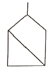
- 공사상
- 기본사상
- 통상사상
- 심층분석사상
(정답률: 44%)
26. 작업자의 작업공간과 관련된 내용으로 옳지 않은 것은?
- 서서 작업하는 작업공간에서 발바닥을 높이면 뻗침길이가 늘어난다.
- 서서 작업하는 작업공간에서 신체의 균형에 제한을 받으면 뻗침길이가 늘어난다.
- 앉아서 작업하는 작업공간은 동적 팔뻗침에 의해 포락면(reach envelope)의 한계가 결정된다.
- 앉아서 작업하는 작업공간에서 기능적 팔뻗침에 영향을 주는 제약이 적을수록 뻗침 길이가 늘어난다.
(정답률: 56%)
27. FTA에 의한 재해사례 연구의 순서를 올바르게 나열한 것은?
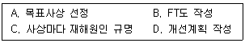
- A→B→C→D
- A→C→B→D
- B→C→A→D
- B→A→C→D
(정답률: 56%)
28. 표시 값의 변화 방향이나 변화 속도를 나타내어 전반적인 추이의 변화를 관측할 필요가 있는 경우에 가장 적합한 표시장치 유형은?
- 계수형(digital)
- 묘사형(descriptive)
- 동목형(moving scale)
- 동침형(moving pointer)
(정답률: 49%)
29. 반복되는 사건이 많이 있는 경우에 FTA의 최소 컷셋을 구하는 알고리즘이 아닌 것은?
- Fussel Algorithm
- Boolean Algorithm
- Monte Carlo Algorithm
- Limnios & Ziani Algorithm
(정답률: 58%)
30. 산업안전보건법령상 정밀작업 시 갖추어져야할 작업면의 조도 기준은? (단, 갱내 작업장과 감광재료를 취급하는 작업장은 제외한다.)
- 75럭스 이상
- 150럭스 이상
- 300럭스 이상
- 750럭스 이상
(정답률: 52%)
31. 신뢰도가 0.4인 부품 5개가 병렬결합 모델로 구성된 제품이 있을 때 이 제품의 신뢰도는?
- 0.90
- 0.91
- 0.92
- 0.93
(정답률: 47%)
32. 조작자 한 사람의 신뢰도가 0.9일대 요원을 중복하여 2인 1조가 되어 작업을 진행하는 공정이 있다. 작업 기간 중 항상 요원 지원을 한다면 이 조의 인간 신뢰도는?
- 0.93
- 0.94
- 0.96
- 0.99
(정답률: 47%)
33. 사용자의 잘못된 조작 또는 실수로 인해 기계의 고장이 발생하지 않도록 설계하는 방법은?
- FMEA
- HAZOP
- fail safe
- fool proof
(정답률: 49%)
34. 인간-기계 시스템을 설계하기 위해 고려해야 할 사항과 거리가 먼 것은?
- 시스템 설계 시 동작 경제의 원칙이 만족되도록 고려한다.
- 인간과 기계가 모두 복수인 경우, 종합적인 효과 보다 기계를 우선적으로 고려한다.
- 대상이 되는 시스템이 위치할 환경 조건이 인간에 대한 한계치를 만족하는가의 여부를 조사한다.
- 인간이 수행해야 할 조작이 연속적인가 불연속적인가를 알아보기 위해 특성조사를 실시한다.
(정답률: 65%)
35. MIL-STD-882E에서 분류한 심각도(severity) 카테고리 범주에 해당하지 않는 것은?
- 재앙수준(catastrophic)
- 임계수준(critical)
- 경계수준(precautionary)
- 무시가능수준(negligible)
(정답률: 39%)
36. 시스템 수명주기 단계 중 이전 단계들에서 발생되었던 사고 또는 사건으로부터 축적된 자료에 대해 실증을 통한 문제를 규명하고 이를 최소화하기 위한 조치를 마련하는 단계는?
- 구상단계
- 정의단계
- 생산단계
- 운전단계
(정답률: 35%)
37. 다수의 표시장치(디스플레이)를 수평으로 배열할 경우 해당 제어장치를 각각의 표시장치 아래에 배치하면 좋아지는 양립성의 종류는?
- 공간 양립성
- 운동 양립성
- 개념 양립성
- 양식 양립성
(정답률: 55%)
38. 조종장치의 촉각적 암호화를 위하여 고려하는 특성으로 볼 수 없는 것은?
- 형상
- 무게
- 크기
- 표면 촉감
(정답률: 56%)
39. 활동의 내용마다 “우·양·가·불가”로 평가하고 이 평가내용을 합하여 다시 종합적으로 정규화하여 평가하는 안전성 평가기법은?
- 평점척도법
- 쌍대비교법
- 계층적 기법
- 일관성 검정법
(정답률: 54%)
40. 환경요소의 조합에 의해서 부과되는 스트레스나 노출로 인해서 개인에 유발되는 긴장(strain)을 나타내는 환경요소 복합지수가 아닌 것은?
- 카타온도(kata temperature)
- Oxford 지수(wet-dry index)
- 실효온도(effective temperature)
- 열 스트레스 지수(heat stress index)
(정답률: 46%)
3과목: 건설시공학
41. 공종별 시공계획서에 기재되어야 할 사항으로 거리가 먼 것은?
- 작업일정
- 투입인원수
- 품질관리기준
- 하자보수계획서
(정답률: 58%)
42. 모래 채취나 수중의 흙을 퍼 올리는 데 가장 적합한 기계장비는?
- 불도저
- 드래그 라인
- 롤러
- 스크레이퍼
(정답률: 54%)
43. 용접작업에서 용접봉을 용접방향에 대하여 서로 엇갈리게 움직여서 용가금속을 용착시키는 운봉방법은?
- 단속용접
- 개선
- 위빙
- 레그
(정답률: 60%)
44. 기성콘크리트 말뚝을 타설할 때 그 중심간격의 기준으로 옳은 것은?
- 말뚝머리지름의 1.5배 이상 또한 750mm 이상
- 말뚝머리지름의 1.5배 이상 또한 1000mm 이상
- 말뚝머리지름의 2.5배 이상 또한 750mm 이상
- 말뚝머리지름의 2.5배 이상 또한 1000mm 이상
(정답률: 51%)
45. 철근단면을 맞대고 산소-아세틸렌염으로 가열하여 적열상태에서 부풀려 가압, 접합하는 철근이음방식은?
- 나사방식이음
- 겹침이음
- 가스압접이음
- 충전식이음
(정답률: 62%)
46. 콘크리트의 건조수축을 크게 하는 요인에 해당되지 않는 것은?
- 분말도가 큰 시멘트 사용
- 흡수량이 많은 골재를 사용할 때
- 부재의 단면치수가 클 때
- 온도가 높을 경우, 습도가 낮을 경우
(정답률: 42%)
47. 지하수가 많은 지반을 탈수하여 건조한 지반으로 개량하기 위한 공법에 해당하지 않는 것은?
- 생석회말뚝(Chemico pile) 공법
- 페이퍼드레인(Paper deain) 공법
- 잭파일(Jacked pile) 공법
- 샌드드레인(Sand drain) 공법
(정답률: 52%)
48. 건설현장에 설치되는 자동식 세륜시설 중 측면살수시설에 관한 설명으로 옳지 않은 것은?
- 측면살수시설의 슬러지는 컨베이어에 의한 자동배출이 가능한 시설을 설치하여야 한다.
- 측면살수시설의 살수길이는 수송차량 전장의 1.5배 이상이어야 한다.
- 측면살수시설은 수송차량의 바퀴부터 적재함 하단부 높이까지 살수할 수 있어야 한다.
- 용수공급은 기 개발된 지하수를 이용하고, 우수 또는 공사용수의 활용을 금한다.
(정답률: 54%)
49. 보기는 지하연속벽(slurry wall)공법의 시공내용이다. 그 순서를 옳게 나열한 것은?
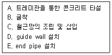
- A→B→C→E→D
- D→B→E→C→A
- B→D→E→C→A
- B→D→C→E→A
(정답률: 47%)
50. 알루미늄거푸집에 관한 설명으로 옳지 않은 것은?
- 거푸집해체 시 소음이 매우 적다.
- 패널과 패널간 연결부위의 품질이 우수하다.
- 기존 재래식 공법과 비교하여 건축폐기물을 억제하는 효과가 있다.
- 패널의 무게를 경량화하여 안전하게 작업이 가능하다.
(정답률: 55%)
51. 철골 세우기 장비의 종류 중 이동식 세우기 장비에 해당하는 것은?
- 크롤러 크레인
- 가이 데릭
- 스티프 레그 데릭
- 타워크레인
(정답률: 46%)
52. 철골부재의 용접 접힙 시 발생되는 용접결함의 종류가 아닌 것은?
- 엔드탭
- 언더컷
- 블로우홀
- 오버랩
(정답률: 48%)
53. 철골조 건물의 연면적이 5000m2 일 때 이 건물 철골재의 무게산출량은? (단, 단위면적당 강재사용량은 0.1~0.15 ton/m2 이다.)
- 30~40 ton
- 100~250 ton
- 300~400 ton
- 500~750 ton
(정답률: 47%)
54. 수밀콘크리트의 배합에 관한 설명으로 옳지 않은 것은?
- 배합은 콘크리트의 소요의 품질이 얻어지는 범위 내에서 단위수량 및 물-결합재비는 되도록 크게 하고, 단위 굵은 골재량은 되도록 작게 한다.
- 콘크리트의 소요 슬럼프는 되도록 작게 하여 180mm를 넘지 않도록 하며, 콘크리트 타설이 용이할 때에는 120mm 이하로 한다.
- 콘크리트의 워커빌리티를 개선시키기 위해 공기연행제, 공기연행감수제 또는 고성능공기연행감수제를 사용하는 경우라도 공기량은 4% 이하가 되게 한다.
- 물-결합재비는 50% 이하를 표준으로 한다.
(정답률: 40%)
55. 철근이음의 종류에 따른 검사시기와 횟수의 기준으로 옳지 않은 것은?
- 가스압접 이음 시 외관검사는 전체개소에 대해 시행한다.
- 가스압점 이음 시 초음파탐사검사는 1검사 로트마다 30개소 발취한다.
- 기계적 이음의 외관검사는 전체개소에 대해 시행한다.
- 용접이음의 인장시험은 700개소마다 시행한다.
(정답률: 49%)
56. 다음 중 벽체전용 시스템 거푸집에 해당되지 않는 것은?
- 갱 폼
- 클라이밍 폼
- 슬립 폼
- 테이블 폼
(정답률: 52%)
57. 건축주가 시공회사의 신용, 자산, 공사경력, 보유기술 등을 고려하여 그 공사에 가장 적격한 단일 업체에게 입찰시키는 방법은?
- 공개경쟁입찰
- 특명입찰
- 사전자격심사
- 대안입찰
(정답률: 52%)
58. 공동도급에 관한 설명으로 옳지 않은 것은?
- 각 회사의 소요자금이 경감되므로 소자본으로 대규모 공사를 수급할 수 있다.
- 각 회사가 위험을 분산하여 부담하게 된다.
- 상호기술의 확충을 통해 기술축적의 기회를 얻을 수 있다.
- 신기술, 신공법의 적용이 불리하다.
(정답률: 58%)
59. 한중 콘크리트의 시공에 관한 설명으로 옳지 않은 것은?
- 하루의 평균기온이 4℃ 이하가 예상되는 조건일 때는 콘크리트가 동결할 염려가 있으므로 한중 콘크리트로 시공하여야 한다.
- 기상조건이 가혹한 경우나 부재 두께가 얇을 경우에는 타설할 때의 콘크리트의 최저온도는 10℃ 정도를 확보하여야 한다.
- 콘크리트를 타설할 마무리된 지반이 이미 동결되어 있는 경우에는 녹이지 않고 즉시 콘크리트를 타설하여야 한다.
- 타설이 끝난 콘크리트는 양생을 시작할 때까지 콘크리트 표면의 온도가 급랭할 가능성이 있으므로, 콘크리트를 타설한 후 즉시 시트나 적당한 재료로 표면을 덮는다.
(정답률: 62%)
60. 기초하부의 먹매김을 용이하게 하기 위하여 60mm 정도의 두께로 강도가 낮은 콘크리트를 타설하여 만든 것은?
- 밑창콘크리트
- 매스콘크리트
- 제자리콘크리트
- 잡석지정
(정답률: 53%)
4과목: 건설재료학
61. 건축공사의 일반창유리로 사용되는 것은?
- 석영유리
- 붕규산유리
- 칼라석회유리
- 소다석회유리
(정답률: 43%)
62. 목재의 함수율에 관한 설명으로 옳지 않은 것은?
- 목재의 함유수분 중 자유수는 목재의 중량에는 영향을 끼치지만 목재의 물리적 성질과는 관계가 없다.
- 침엽수의 경우 심재의 함수율은 항상 변재의 함수율보다 크다.
- 섬유포화상태의 함수율은 30% 정도이다.
- 기건상태란 목재가 통상 대기의 온도, 습도와 평형된 수분을 함유한 상태를 말하며, 이때의 함수율은 15% 정도이다.
(정답률: 44%)
63. 건물의 바닥 충격음을 저감시키는 방법에 관한 설명으로 옳지 않은 것은?
- 완충재를 바닥 공간 사이에 넣는다.
- 부드러운 표면마감재를 사용하여 충격력을 작게 한다.
- 바닥을 띄우는 이중바닥으로 한다.
- 바닥슬래브의 중량을 작게 한다.
(정답률: 61%)
64. KS F 2503(굵은 골재의 밀도 및 흡수율 시험방법)에 따른 흡수율 산정식은 다음과 같다. 여기에서 A가 의미하는 것은?
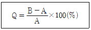
- 절대건조상태 시료의 질량(g)
- 표면건조포화상태 시료의 질량(g)
- 시료의 수중질량(g)
- 기건상태시료의 질량(g)
(정답률: 40%)
65. KS F 4⑤2에 따라 방수공사용 아스팔트는 사용용도에 따라 4종류로 분류된다. 이 중, 감온성이 낮은 것으로서 주로 일반지역의 노출지붕 또는 기온이 비교적 높은 지역의 지붕에 사용하는 것은?
- 1종(침입도 지수 3 이상)
- 2종(침입도 지수 4 이상)
- 3종(침입도 지수 5 이상)
- 4종(침입도 지수 6 이상)
(정답률: 43%)
66. 콘크리트의 건조수축 현상에 관한 설명으로 옳지 않은 것은?
- 단위 시멘트량이 작을수록 커진다.
- 단위 수량이 클수록 커진다.
- 골재가 경질이면 작아진다.
- 부재치수가 크면 작아진다.
(정답률: 31%)
67. 용제 또는 유제상태의 방수제를 바탕면에 여러번 칠하여 방수막을 형성하는 방수법은?
- 아스팔트 루핑 방수
- 도막 방수
- 시멘트 방수
- 시트 방수
(정답률: 56%)
68. 콘크리트의 워커빌리티 측정법에 해당되지 않는 것은?
- 슬럼프시험
- 다짐계수시험
- 비비시험
- 오토클레이브 팽창도시험
(정답률: 47%)
69. 단열재의 선정조건으로 옳지 않은 것은?
- 흡수율이 낮을 것
- 비중이 클 것
- 열전도율이 낮을 것
- 내화성이 좋을 것
(정답률: 50%)
70. 비철금속에 관한 설명으로 옳지 않은 것은?
- 청동은 동과 주석의 합금으로 건축장식철물 또는 미술공예재료에 사용된다.
- 황동은 동과 아연의 합금으로 산에는 침식되기 쉬우나 알칼리나 암모니아에는 침식되지 않는다.
- 알루미늄은 광선 및 열의 반사율이 높지만 연질이기 때문에 손상되기 쉽다.
- 납은 비중이 크고 전성, 연성이 풍부하다.
(정답률: 52%)
71. 돌붙임공법 중에서 석재를 미리 붙여놓고 콘크리트를 타설하여 일체화시키는 방법은?
- 조적공법
- 앵커긴결공법
- GPC공법
- 강재트러스 지지공법
(정답률: 44%)
72. 건축용 소성 점토벽돌의 색체에 영향을 주는 주요한 요인이 아닌 것은?
- 철화합물
- 망간화합물
- 소성온도
- 산화나트륨
(정답률: 38%)
73. 다음 중 실(seal)재가 아닌 것은?
- 코킹재
- 퍼티
- 트래버틴
- 개스킷
(정답률: 44%)
74. 콘크리트의 배합 설계 시 굵은 골재의 절대용적이 500cm3, 잔골재의 절대용적이 300cm3라 할 때 잔골재율(%)은?
- 37.5%
- 40.0%
- 52.5%
- 60.0%
(정답률: 31%)
75. 열가소성 수지가 아닌 것은?
- 염화비닐수지
- 초산비닐수지
- 요소수지
- 폴리스티렌수지
(정답률: 45%)
76. 미장재료에 관한 설명으로 옳지 않은 것은?
- 회반죽벽은 습기가 많은 장소에서 시공이 곤란하다.
- 시멘트 모르타르는 물과 화학반응하여 경화되는 수경성 재료이다.
- 돌로마이트 플라스터는 마그네시아 석회에 모래, 여물을 섞어 반죽한 바름벽 재료를 말한다.
- 석고 플러스터는 공기 중의 탄산가스를 흡수하여 경화한다.
(정답률: 36%)
77. 내약품성, 내마모성이 우수하여 화학공장의 방수층을 겸한 바닥 마무리재로 가장 적합한 것은?
- 합성고분자 방수
- 무기질 침투방수
- 아스팔트 방수
- 에폭시 도막방수
(정답률: 57%)
78. 일반적으로 철, 크롬, 망간 등의 산화물을 혼합하여 제조한 것으로 염색품의 색이 바래는 것을 방지하고 채광을 요구하는 진열장 등에 이용되는 유리는?
- 자외선흡수유리
- 망입유리
- 복층유리
- 유리블록
(정답률: 48%)
79. 회반죽 바름의 주원료가 아닌 것은?
- 소석회
- 점토
- 모래
- 해초풀
(정답률: 39%)
80. 목재의 건조에 관한 설명으로 옳지 않은 것은?
- 대기건조 시 통풍이 잘되게 세워 놓거나, 일정 간격으로 쌓아올려 건조시킨다.
- 마구리부분은 급격히 건조되면 갈라지기 쉬우므로 페인트 등으로 도장한다.
- 인공건조법으로 건조 시 기간은 통상 약 5~6주 정도이다.
- 고주파건조법은 고주파 에너지를 열에너지로 변화시켜 발열현상을 이용하여 건조한다.
(정답률: 46%)
5과목: 건설안전기술
81. 동바리로 사용하는 파이프 서포트에 관한 설치 기준으로 옳지 않은 것은?
- 파이프 서포트를 3개 이상 이어서 사용하지 않도록 할 것
- 파이프 서포트를 이어서 사용하는 경우에는 4개 이상의 볼트 또는 전용철물을 사용하여 이을 것
- 높이가 3.5m를 초과하는 경우에는 높이 2m 이내마다 수평연결재를 2개 방향으로 만들고 수평연결재의 변위를 방지할 것
- 파이프 서포트 사이에 교차가새를 설치하여 수평력에 대하여 보강 조치할 것
(정답률: 29%)
82. 블레이드의 길이가 길고 낮으며 블레이드의 좌우를 전후 25~30° 각도로 회전시킬 수 있어 흙을 측면으로 보낼 수 있는 도저는?
- 레이크 도저
- 스트레이트 도저
- 앵글도저
- 틸트도저
(정답률: 49%)
83. 리프트(Lift)의 방호장치에 해당하지 않는 것은?
- 권과방지장치
- 비상정지장치
- 과부하방지장치
- 자동경보장치
(정답률: 45%)
84. 작업발판 및 통로의 끝이나 개구부로서 근로자가 추락할 위험이 있는 장소에서의 방호조치로 옳지 않은 것은?
- 안전난간 설치
- 와이어로프 설치
- 울타리 설치
- 수직형 추락방망 설치
(정답률: 47%)
85. 건물외부에 낙하물 방지망을 설치할 경우 벽면으로부터 돌출되는 거리의 기준은?
- 1m 이상
- 1.5m 이상
- 1.8m 이상
- 2m 이상
(정답률: 41%)
86. 다음은 비계를 조립하여 사용하는 경우 작업발판 설치에 관한 기준이다. ( )에 들어갈 내용으로 옳은 것은?
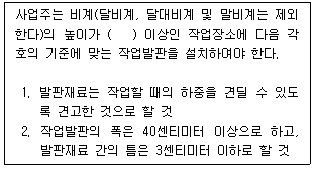
- 1m
- 2m
- 3m
- 4m
(정답률: 53%)
87. 신축공사 현장에서 강관으로 외부비계를 설치할 때 비계기둥의 최고 높이가 45m라면 관련 법령에 따라 비계기둥을 2개의 강관으로 보강하여야 하는 높이는 지상으로부터 얼마까지인가?
- 14m
- 20m
- 25m
- 31m
(정답률: 34%)
88. 암질 변화구간 및 이상 암질 출현 시 판별 방법과 가장 거리가 먼 것은?
- R.Q.D
- R.M.R
- 지표침하량
- 탄성파 속도
(정답률: 38%)
89. 산업안전보건법령에 따른 크레인을 사용하여 작업을 하는 때 작업시작 전 점검사항에 해당되지 않는 것은?
- 권과방지장치·브레이크·클러치 및 운전장치의 기능
- 주행로의 상측 및 트롤리(trolley)가 횡행하는 레일의 상태
- 원동기 및 풀리(pulley)기능의 이상 유무
- 와이어로프가 통하고 있는 곳의 상태
(정답률: 42%)
90. 부두·안벽 등 하역작업을 하는 장소에서 부두 또는 안벽의 선을 따라 통로를 설치하는 경우 그 폭을 최소 얼마 이상으로 하여야 하는가?
- 60cm
- 90cm
- 120cm
- 150cm
(정답률: 54%)
91. 다음과 같은 조건에서 추락 시 로프의 지지점에서 최하단까지의 거리 h를 구하면 얼마인가?
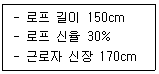
- 2.8m
- 3.0m
- 3.2m
- 3.4m
(정답률: 35%)
92. 건설공사 유해위험방지계획서 제출 시 공통적으로 제출하여야 할 첨부서류가 아닌 것은?
- 공사개요서
- 전체 공정표
- 산업안전보건관리비 사용계획서
- 가설도로계획서
(정답률: 45%)
93. 흙막이 지보공을 설치하였을 때 붕괴 등의 위험방지를 위하여 정기적으로 점검하고, 이상 발견 시 즉시 보수하여야 하는 사항이 아닌 것은?
- 침하의 정도
- 버팀대의 긴압의 정도
- 지형·지질 및 지층상태
- 부재의 손상·변형·변위 및 탈락의 유무와 상태
(정답률: 46%)
94. 다음은 산업안전보건법령에 따른 승강설비의 설치에 관한 내용이다. ( )에 들어갈 내용으로 옳은 것은?
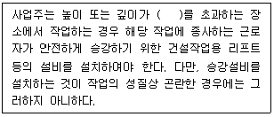
- 2m
- 3m
- 4m
- 5m
(정답률: 44%)
95. 항타기 및 항발기를 조립하는 경우 점검하여야 할 사항이 아닌 것은?
- 과부하장치 및 제동장치의 이상 유무
- 권상장치의 브레이크 및 쐐기장치 기능의 이상 유무
- 본체 연결부의 풀림 또는 손상의 유무
- 권상기의 설치상태의 이상 유무
(정답률: 29%)
96. 강관을 사용하여 비계를 구성하는 경우의 준수사항으로 옳지 않은 것은?
- 비계기둥의 간격은 띠장 방향에서는 1.85m 이하로 할 것
- 비계기둥의 간격은 장선(長線) 방향에서는 1.0m 이하로 할 것
- 띠장 간격은 2.0m 이하로 할 것
- 비계기둥 간의 적재하중은 400kg을 초과하지 않도록 할 것
(정답률: 38%)
97. 철근콘크리트 현장타설공법과 비교한 PC(precast concrete)공법의 장점으로 볼 수 없는 것은?
- 기후의 영향을 받지 않아 동절기 시공이 가능하고, 공기를 단축할 수 있다.
- 현장작업이 감소되고, 생산성이 향상되어 인력절감이 가능하다.
- 공사비가 매우 저렴하다.
- 공장 제작이므로 콘크리트 양생 시 최적조건에 의한 양질의 제품생산이 가능하다.
(정답률: 54%)
98. 콘크리트를 타설할 때 거푸집에 작용하는 콘크리트 측압에 영향을 미치는 요인과 가장 거리가 먼 것은?
- 콘크리트 타설 속도
- 콘크리트 타설 높이
- 콘크리트의 강도
- 기온
(정답률: 47%)
99. 히빙(heaving)현상이 가장 쉽게 발생하는 토질지반은?
- 연약한 점토 지반
- 연약한 사질토 지반
- 견고한 점토 지반
- 견고한 사질토 지반
(정답률: 49%)
100. 안전관리비의 사용 항목에 해당하지 않는 것은?
- 안전시설비
- 개인보호구 구입비
- 접대비
- 사업장의 안전·보건진단비
(정답률: 63%)